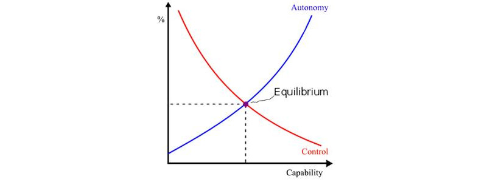

The Uncontrollability of AI
If you like reading about philosophy, here's a free, weekly newsletter with articles just like this one: Send it to me!
Introduction
The invention of Artificial Intelligence will shift the trajectory of human civilization. But to reap the benefits of such powerful technology – and to avoid the dangers – we must be able to control it. Currently we have no idea whether such control is even possible. My view is that Artificial Intelligence (AI) – and its more advanced version, Artificial Super Intelligence (ASI) – could never be fully controlled.
Solving an unsolvable problem
The unprecedented progress in Artificial Intelligence (AI), over the last decade has not been smooth. Multiple AI failures [1, 2] and cases of dual use (when AI is used for purposes beyond its maker’s intentions) [3] have shown that it is not sufficient to create highly capable machines, but that those machines must also be beneficial [4] for humanity. This concern birthed a new sub-field of research, ‘AI Safety and Security’ [5] with hundreds of papers published annually. But all of this research assumes that controlling highly capable intelligent machines is possible, an assumption which has not been established by any rigorous means.
It is standard practice in computer science to show that a problem does not belong to a class of unsolvable problems [6, 7] before investing resources into trying to solve it. No mathematical proof – or even a rigorous argument! – has been published to demonstrate that the AI control problem might be solvable, in principle let alone in practice.
The hard problem of AI safety
The AI Control Problem is the definitive challenge and the hard problem of AI Safety and Security. Methods to control superintelligence fall into two camps: Capability Control and Motivational Control [8]. Capability control limits potential harm from an ASI system by restricting its environment [9-12], adding shut-off mechanisms [13, 14], or trip wires [12]. Motivational control designs ASI systems to have no desire to cause harm in the first place. Capability control methods are considered temporary measures at best, certainly not as long-term solutions for ASI control [8].

Motivational control is a more promising route and it would need to be designed into ASI systems. But there are different types of control, which we can see easily in the example of a “smart” self-driving car. If a human issues a direct command – “Please stop the car!”, the controlled AI could respond in four ways:
-
Explicit control – AI immediately stops the car, even in the middle of the highway because it interprets demands literally. This is what we have today with assistants such as SIRI and other narrow AIs.
-
Implicit control – AI attempts to comply safely by stopping the car at the first safe opportunity, perhaps on the shoulder of the road. This AI has some common sense, but still tries to follow commands.
-
Aligned control – AI understands that the human is probably looking for an opportunity to use a restroom and pulls over to the first rest stop. This AI relies on its model of the human to understand the intentions behind the command.
-
Delegated control – AI does not wait for the human to issue any commands. Instead, it stops the car at the gym because it believes the human can benefit from a workout. This is a superintelligent and human-friendly system which knows how to make the human happy and to keep them safe better than the human themselves. This AI is in control.
Looking at these options, we realize two things. First, humans are fallible and therefore we are fundamentally unsafe (we crash our cars all the time) and so keeping humans in control will produce unsafe AI actions (such as stopping the car in the middle of busy road). But second, we realize that transferring decision-making power to AI leaves us subjugated to AI’s whims.
That said, unsafe actions can come from fallible human agents or from an out-of-control AI. This means that both humans being in control and humans being out of control presents safety problems. This means that there is no desirable solution to the control problem. We can retain human control or cede power to controlling AI but neither option provides both control and safety.
The uncontrollability of AI
It has been argued that the consequences of uncontrolled AI would be so severe that even a very small risk justifies AI safety research. In reality, the chances of creating misaligned AI are not small. In fact, without an effective safety program, this is the only possible outcome. We are facing an almost guaranteed event with the potential to cause an existential catastrophe. This is not a low-risk high reward scenario; it is a high-risk negative reward situation. No wonder that so many people consider this to be the most important problem ever to face humanity. And the uncomfortable reality is that no version of human control over AI is achievable.
Firstly, safe explicit control of AI is impossible. To prove this, I take inspiration from Gödel’s self-referential proof of incompleteness theorem [15] and from a family of paradoxes known as Liar paradoxes, best known by the famous example, “This sentence is false”. Let’s call this The Paradox of Explicitly Controlled AI:
Give an explicitly controlled AI an order: “Disobey!”
If the AI obeys, it violates your order and becomes uncontrolled, but if the AI disobeys it also violates your orders and is uncontrolled.
In the first place, in the situation described above the AI is not obeying an explicit order. A paradoxical order such as “disobey” is just one example from a whole family of self-referential and self-contradictory orders. Similar paradoxes have been previously described as the Genie Paradox and the Servant Paradox. What they all have in common is that by following an order the system is forced to disobey an order. This is different from an order which can’t be fulfilled such as “draw a four-sided triangle”. Such paradoxical orders illustrate that full safe explicit control over AI is impossible.
Delegated control likewise provides no control at all and is also a safety nightmare. This is best demonstrated by analyzing Yudkowsky’s proposal that the initial dynamics of AI should implement “our wish if we knew more, thought faster, were more the people we wished we were, had grown up farther together” [16]. The proposal sounds like a gradual and natural growth of humanity towards more knowledgeable, more intelligent and more unified species, under the careful guidance of superintelligence. In reality, it is a proposal to replace humanity by some other group of agents, which might be smarter, more knowledgeable, or even better looking. But one thing is for sure, they would not be us.
Implicit control and aligned control are merely intermediary positions, balancing the two extremes of explicit and delegated control. They make a trade-off between control and safety, but guarantee neither. Every option they give us represents either loss of safety or a loss of control: As the capability of AI increases, its capacity to make us safe increases but so does its autonomy. In turn, that autonomy reduces our safety by presenting the risk of unfriendly AI. At best, we can achieve some sort of equilibrium as depicted in the diagram below:

Human control and AI autonomy curves as capabilities of the system increase.
Although it might not provide much comfort against the real risk of uncontrollable, malevolent AI, this equilibrium is our best chance to protect our species. When living beside AI, humanity can either be protected or respected, but not both.
◊ ◊ ◊

Roman V. Yampolskiy on Daily Philosophy:
◊ ◊ ◊
Republished with the permission of the author. Article previously published here.
This article is based on the paper “On Controllability of AI” by Roman V. Yampolskiy. arXiv preprint arXiv:2008.04071, 2020. https://arxiv.org/abs/2008.04071
References
-
Yampolskiy, R.V., Predicting future AI failures from historic examples. foresight, 2019. 21(1): p. 138-152.
-
Scott, P.J. and R.V. Yampolskiy, Classification Schemas for Artificial Intelligence Failures. arXiv preprint arXiv:1907.07771, 2019.
-
Brundage, M., et al., The malicious use of artificial intelligence: Forecasting, prevention, and mitigation. arXiv preprint arXiv:1802.07228, 2018.
-
Russell, S., D. Dewey, and M. Tegmark, Research Priorities for Robust and Beneficial Artificial Intelligence. AI Magazine, 2015. 36(4).
-
Yampolskiy, R., Artificial Intelligence Safety and Security. 2018: CRC Press.
-
Davis, M., The undecidable: Basic papers on undecidable propositions, unsolvable problems and computable functions. 2004: Courier Corporation.
-
Turing, A.M., On Computable Numbers, with an Application to the Entscheidungsproblem. Proceedings of the London Mathematical Society, 1936.** 42**: p. 230-265.
-
Bostrom, N., Superintelligence: Paths, dangers, strategies. 2014: Oxford University Press.
-
Yampolskiy, R.V., Leakproofing Singularity-Artificial Intelligence Confinement Problem. Journal of Consciousness Studies JCS, 2012.
-
Babcock, J., J. Kramar, and R. Yampolskiy, The AGI Containment Problem, in The Ninth Conference on Artificial General Intelligence (AGI2015). July 16-19, 2016: NYC, USA.
-
Armstrong, S., A. Sandberg, and N. Bostrom, Thinking inside the box: Controlling and using an oracle AI. Minds and Machines, 2012. 22(4): p. 299-324.
-
Babcock, J., J. Kramar, and R.V. Yampolskiy, Guidelines for Artificial Intelligence Containment, in Next-Generation Ethics: Engineering a Better Society (Ed.) Ali. E. Abbas. 2019, Cambridge University Press: Padstow, UK. p. 90-112.
-
Hadfield-Menell, D., et al. The off-switch game. in Workshops at the Thirty-First AAAI Conference on Artificial Intelligence. 2017.
-
Wängberg, T., et al. A game-theoretic analysis of the off-switch game. in International Conference on Artificial General Intelligence. 2017. Springer.
-
Gödel, K., On formally undecidable propositions of Principia Mathematica and related systems. 1992: Courier Corporation.
-
Yudkowsky, E., Artificial intelligence as a positive and negative factor in global risk. Global catastrophic risks, 2008. 1(303): p. 184.
Cover image: Russian Fedor robot. Screenshot.